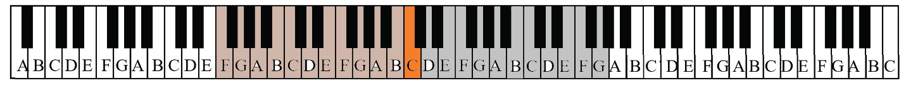
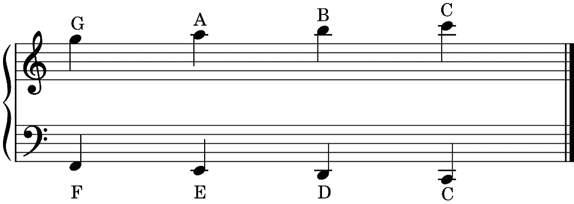
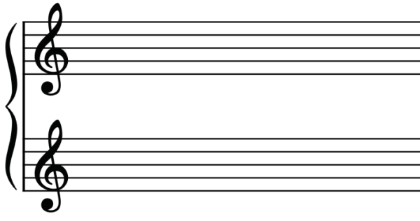

Notes on the grand staff can also be written above the treble staff or below the bass staff using ledger lines. Figure 2.11 shows the grand staff with notes written above and below the treble and bass staffs using ledger lines.

Sometimes a grand staff may contain two clefs of the same type. It may have two treble or bass clefs. This happens when voices are in the same register. A register refers to a range of an instrument or singing voice. If the voices in the bass staff are higher than usual, best way is to write them on the treble staff. Likewise, if the voices in the treble staff are lower than usual, best way is to write them on the bass staff. Figure 2.12 shows a grand staff with two treble clefs while Figure 2.13 shows a grand staff with two bass clefs.
